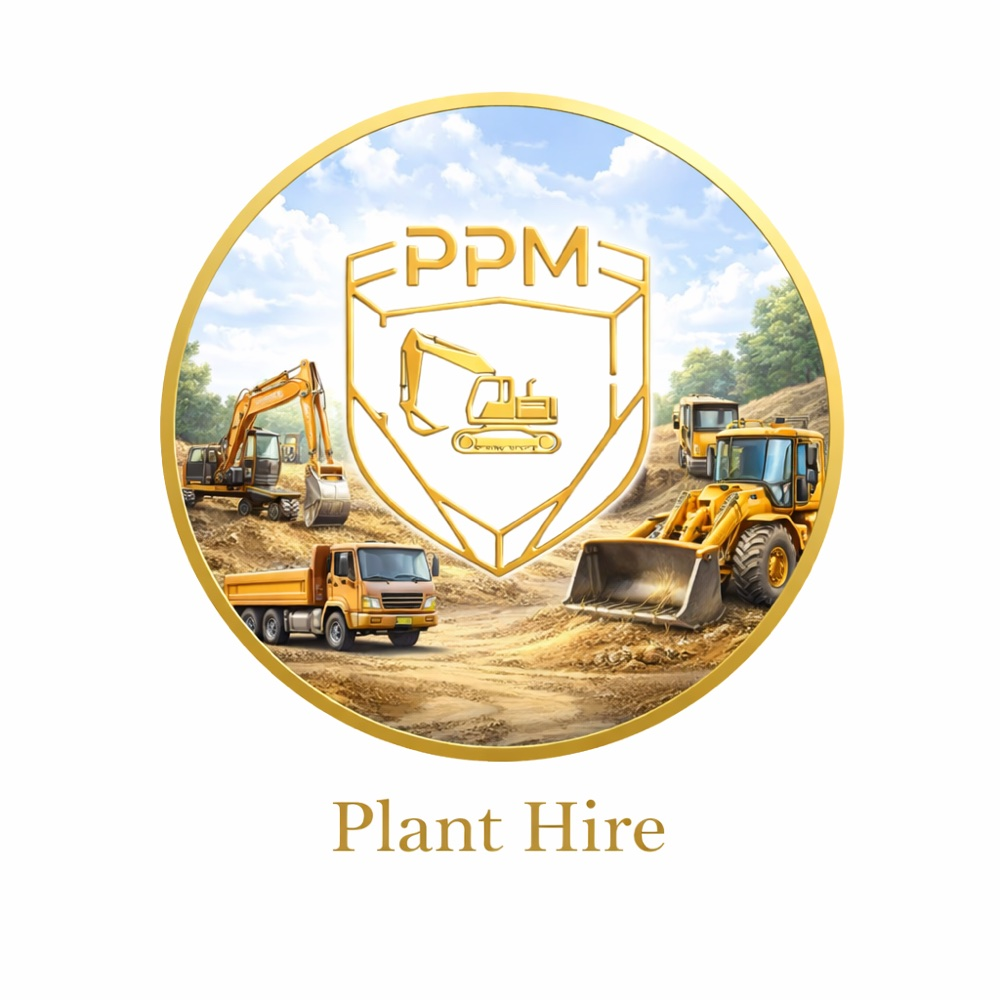
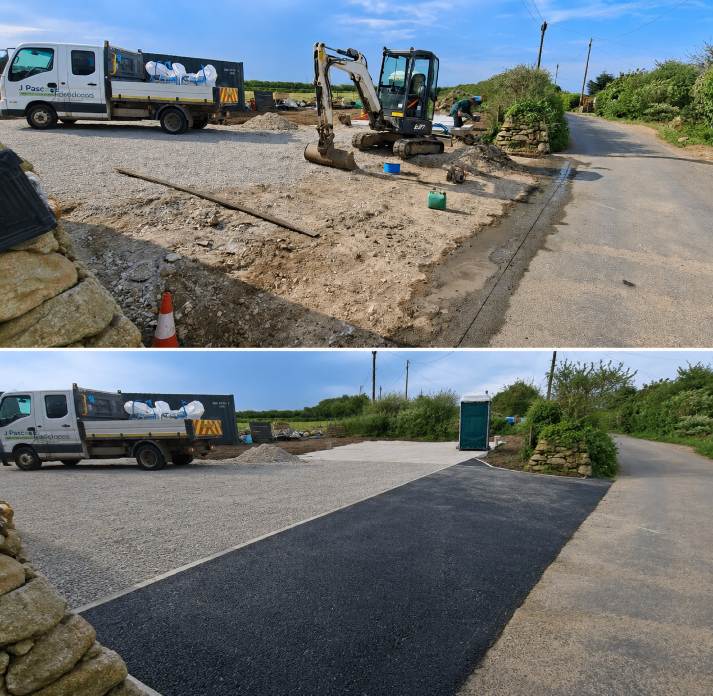
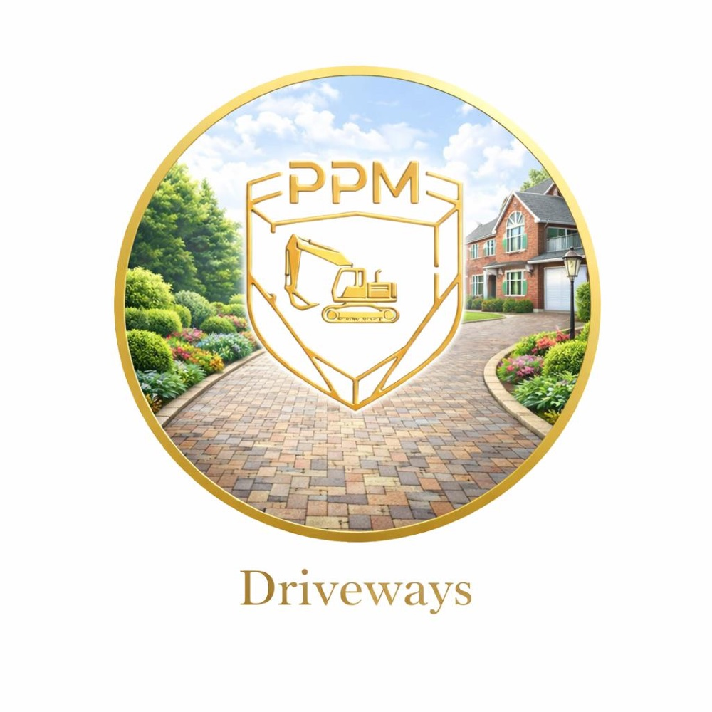
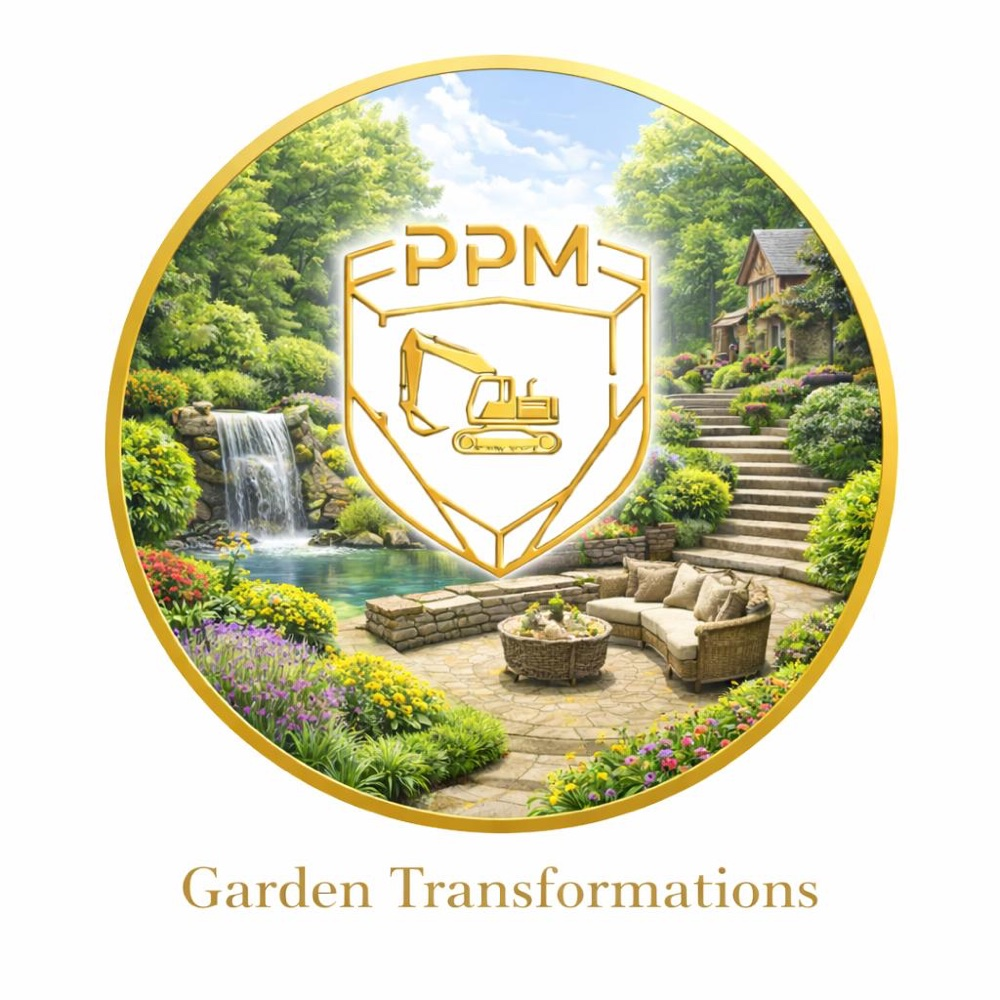
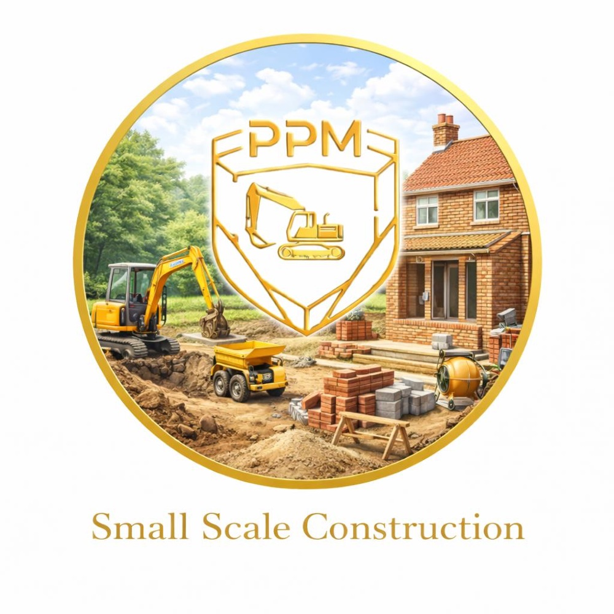
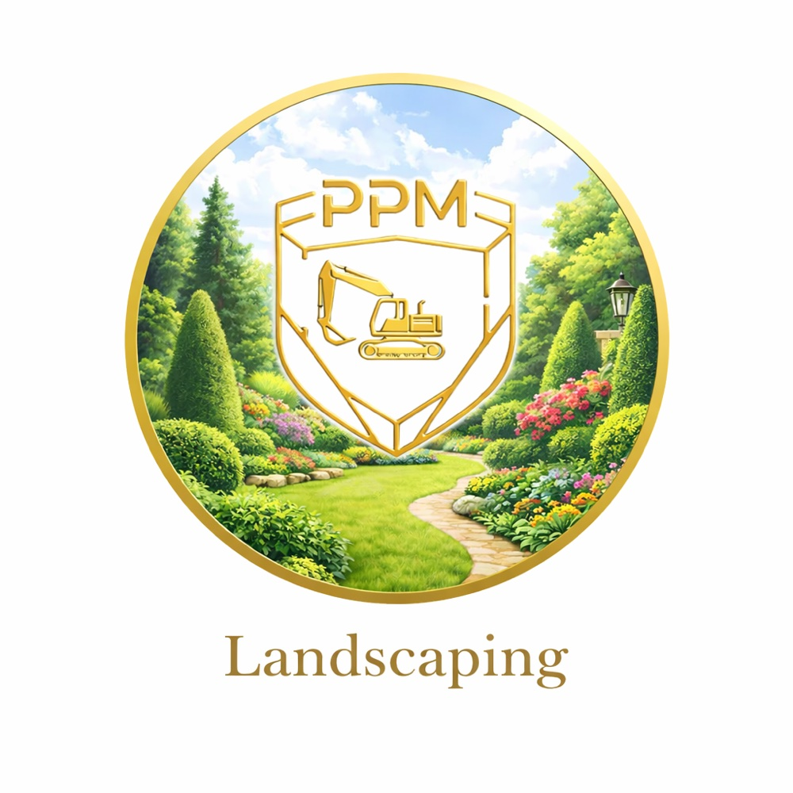
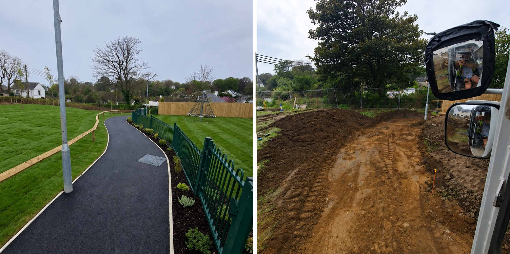
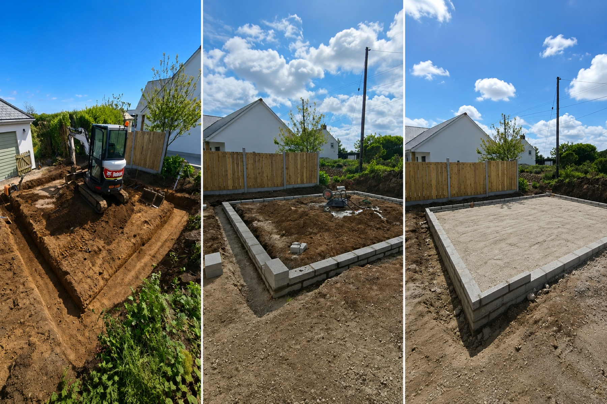

01
Groundworks & Plant Hire
Mini digger hire Cornwall, dumper hire, self-drive hire, operator hire, concrete foundations, site preparation and general groundworks Helston Cornwall projects.
Helston Cornwall plant hire, groundworks and outdoor transformations
Reliable mini digger hire, excavation, site clearance, driveway preparation, foundations, patio preparation, garden clearance and landscaping services across Helston Cornwall and surrounding areas.

Reliable Service
Parker Plant & Machinery provides professional groundworks, plant hire, mini digger hire, landscaping and clearance services across Helston Cornwall and surrounding areas.
We help homeowners, builders and contractors with excavation, driveway preparation, patio preparation, drainage trenches, foundations, garden clearance, site preparation and outdoor transformations throughout Cornwall.
Every project is handled with tidy working standards, reliable machinery, experienced operators and clear communication from start to finish.
Services

Mini digger hire Cornwall, dumper hire, self-drive hire, operator hire, concrete foundations, site preparation and general groundworks Helston Cornwall projects.

Driveway preparation, driveway upgrades, gravel driveways, patio preparation Cornwall services, access roads and surface preparation across Helston Cornwall.

Garden clearance Cornwall, garden reshaping, land clearance, vegetation clearance, waste removal, outdoor preparation and garden transformation Cornwall projects.

Excavation Cornwall, small demolition jobs, ground clearance and site preparation for building, landscaping, patios, drainage and driveway projects.

Landscaping Cornwall services for paths, patios, planting areas, garden reshaping, outdoor improvements and practical garden transformations.
Why Choose Us
Before and After Transformations



Areas We Cover
We cover Helston, Falmouth, Penryn, Redruth, Camborne, Truro, Hayle, Penzance, St Austell and surrounding Cornwall areas.
FAQ
Yes, we provide mini digger hire Cornwall services, including self-drive hire and operator hire for domestic and commercial projects.
Yes, we provide groundworks Helston Cornwall, excavation Cornwall, foundations, drainage trenches, driveway preparation and site preparation.
Yes, we offer garden clearance Cornwall services including vegetation clearance, outdoor space preparation, landscaping and garden transformation projects.
Yes, we help with patio preparation Cornwall, driveway preparation, access roads, gravel driveways and surface preparation.
Request a Free Quote
For Groundworks Helston Cornwall, Plant Hire Helston Cornwall, Mini Digger Hire Cornwall, Site Clearance Cornwall, Excavation Cornwall and Landscaping Cornwall enquiries, call or email Parker Plant & Machinery today.